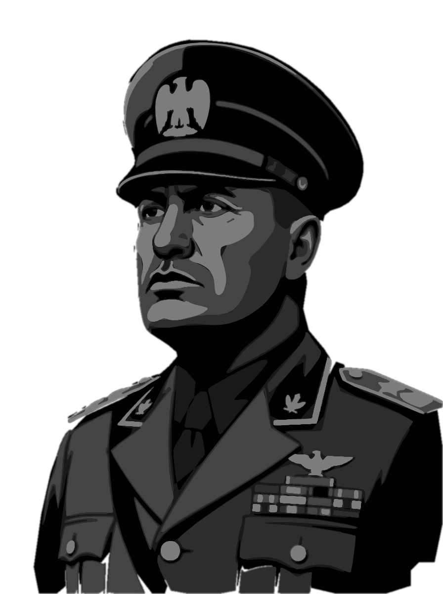

ENG 101 · Oral Presentation
The man on the balcony
Mussolini, the cult of the leader and the erasure of the individual
Kerem Uysal · Section 103 · Portrait generated with Gemini
Predappio
Predappio, Romagna · 1883
From socialist to nationalist
29 July 1883
Born in Predappio, a small town in Romagna
1912
Editor of the Socialist daily Avanti!
1914
Breaks with the Socialists over the war: leaves Avanti!, is expelled from the party and takes over Il Popolo d’Italia
Foot and Hibbert
Milan
Rome
1919–1922
The road to Rome
March 1919 · Milan
Founds the fasci di combattimento, the “fighting leagues”
Late October 1922
About 25,000 Fascist squad members converge on Rome; the king refuses to declare martial law
29–30 October 1922
The king asks Mussolini to form a government. He arrives from Milan by train: the leader of the march never marched
“Italy”; Britannica, “March on Rome”
Thesis
Mussolini’s regime turned the humanist order upside down: the individual existed for the State, and the cult of the leader replaced personal conscience with obedience.
The motto of Fascist youth
Credere.
Believe.
Obbedire.
Obey.
Combattere.
Fight.
Missing: to think, to question, to choose.
Koon 106, 251
The Doctrine of Fascism, 1932
The State above the person
“Anti-individualistic, the Fascist conception is for the State; it is for the individual only in so far as he coincides with the State”
Mussolini, sec. 7
“No individuals nor groups (political parties, associations, labour unions, classes) outside the State.”
Mussolini, sec. 8
The cult of the Duce
Mussolini ha sempre ragione
“Mussolini is always right”: painted on walls and murals (Clark et al.)
Fromm: authoritarian ethics rests on “awe of the authority and on the subject’s feeling of weakness and dependence; … its decisions cannot and must not be questioned” (1).
Rational authority, by contrast, “requires constant scrutiny and criticism” (1).
E. M. Forster · 1939
The individual dissolved
“I distrust Great Men. They produce a desert of uniformity around them and often a pool of blood too …”
Forster 2
“The dictator-hero can grind down his citizens till they are all alike, but he cannot melt them into a single man.”
Forster 4
Humanist Manifesto II · 1973
The humanist answer
“We reject all religious, ideological, or moral codes that denigrate the individual, suppress freedom, dull intellect, dehumanize personality.”
American Humanist Association, Fifth principle
Denigrate the individual
the Doctrine: only “in so far as he coincides with the State”
Suppress freedom
no parties or unions outside the State
Dull intellect
“Mussolini is always right”
Dehumanize personality
the ranks of identical soldiers
Evaluation
Why did people follow him?
Fear of the left
After the strikes of 1919–20, many saw the squads as protection against Socialism; police and army often looked away.
Money and power
Landowners and industrialists financed the squads that broke unions and cooperatives.
The middle class
Students, shopkeepers and clerks backed a movement that promised order.
Fascism was imposed, but it was also accepted: paid for by elites and welcomed by a middle class that wanted order.
“Italy”
1924–1945
From dictatorship to collapse
1924
Socialist leader Matteotti murdered by squadristi
1925
Claims responsibility in parliament; turns to dictatorship
1940
Enters the Second World War
1943
Voted down by the Grand Council; arrested
1945
Shot by partisans, 28 April
One vote in his own Grand Council, and within a day the man who was “always right” was under arrest.
Foot and Hibbert; Britannica, “Giacomo Matteotti”
Conclusion
What the balcony did, and what it could not
1
The doctrine put the State above the person.
2
The cult replaced conscience with obedience (Fromm).
3
It was accepted as well as imposed.
4
Yet, as Forster says, a dictator “cannot melt them into a single man” (Forster 4).
The man on the balcony needed a crowd. A crowd is still made of single people.
Q & A
Questions?
Works Cited
American Humanist Association. Humanist Manifesto II. 1973.
Britannica, The Editors of Encyclopaedia. “Giacomo Matteotti.” Encyclopædia Britannica, 6 June 2026, www.britannica.com/biography/Giacomo-Matteotti. Accessed 15 Nov. 2026.
Britannica, The Editors of Encyclopaedia. “March on Rome.” Encyclopædia Britannica, 29 Oct. 2026, www.britannica.com/event/March-on-Rome. Accessed 15 Nov. 2026.
Clark, Martin, et al. “Fascist Party.” Encyclopædia Britannica, www.britannica.com/topic/Fascist-Party.
Foot, John, and Christopher Hibbert. “Benito Mussolini.” Encyclopædia Britannica, 26 Sept. 2026, www.britannica.com/biography/Benito-Mussolini. Accessed 15 Nov. 2026.
Forster, E. M. “What I Believe.” 1939. Course text.
Fromm, Erich. “Humanistic Ethics.” Man for Himself, 1947. Abridged course text.
“Italy: The Fascist Era.” Encyclopædia Britannica, www.britannica.com/place/Italy/The-Fascist-era.
Koon, Tracy H. Believe, Obey, Fight: Political Socialization of Youth in Fascist Italy, 1922–1943. U of North Carolina P, 1985.
Mussolini, Benito. “The Doctrine of Fascism.” Translated by I. S. Munro. Readings on Fascism and National Socialism, selected by members of the Department of Philosophy, University of Colorado, Alan Swallow, 1958. Project Gutenberg, www.gutenberg.org/ebooks/14058.
“Stylised Portrait of Mussolini in a Peaked Cap and Uniform.” Gemini, Hydrogen 4 model, Google, 13 Nov. 2026, gemini.google.com.
Sources online
Read them yourself
Britannica · Benito Mussolini
Britannica · Giacomo Matteotti
Britannica · March on Rome
Britannica · Fascist Party
Britannica · Italy: The Fascist era
The Doctrine of Fascism
Humanist Manifesto II
Forster and Fromm: ENG 101 course texts · Koon: print book, ISBN 978-0-8078-1652-3